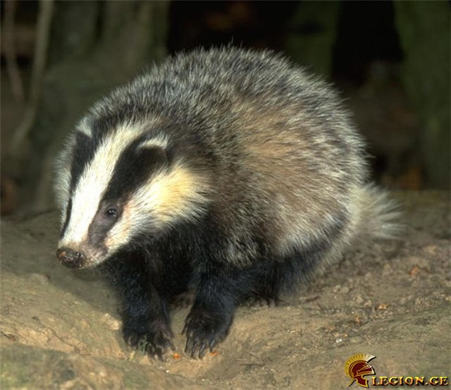

გორილა
გორილა (Gorilla gorilla), მაიმუნი პრიმატების რიგისა.
მისი სიმაღლე 175 სმ აღწევს, ხელების შლილი 260 სმ, წონა - 135-180 კგ (ტყვეობაში 300 კგ-მდე).
დედალი გაცილებით ნაკლები ზომისაა (იწონის 75-100 კგ, ტყვეობაში 126 კგ-მდე).
გორილას ბალანი შავი აქვს, თხემზე წაბლისფერი, ზურგზე სიბერეში უჭაღარავდება.
ტვინის ქალას მოცულობა 500-600 (ზოგისა 752) სმ3.
ტვინი აგებულებით ადამიანის ტვინს უახლოვდება.
ზედა კიდურები ქვედაზე გრძელია.
ადამიანთან მსგავსებას ნაწილობრივ განაპირობებს ხმელეთზე ცხოვრების ნირი.
გორილა გავრცელებულია ეკვატორულ აფრიკაში.
ცხოვრობს ტროპიკულ ტყეებში ხროვებად, რომლებსაც მეთაურობენ ძლიერი მამლები.
დადის ოთხ ფეხზე. იკვებება მცენარეთა ნაყოფით, კენკრით და სხვა.
მაკეობა 250-290 დღე გრძელდება. ახლად დაბადებული გორილა 2 კგ-მდე იწონის.
ცოცხლობს 25-30 წელი.
შინაური კატა
შინაური კატა შინაური კატა გამოირჩევა მეგობრობის უნარით.
ადამიანისა და კატის მეგობრობა 10 000 წელია გრძელდება, თავიდან მან ადამიანების დაფასება მოიპოვა იმით, რომ ანადგურებდა პარაზიტებს.
ის ჭკვიან ძუძუმწოვრებს მიეკუთვნება და ექვემდებარება გაწვრთნას.
უბრალო კატამ შეიძლება მოახდინოს მანიპულირება სხვადასხვა საგანზე ან მექანიზმზე.
გამოირჩევა მისტიციზმითა და უცნაურობით.
მასზე შექმნილი და დაწერილია მრავალი მითი.
კატას ინტელექტის თვალსაზრისით შეუძლია სწავლა, ფიქრი, ამა თუ იმ პრობლემის გადაჭრა, მოხერხებულობა და გონიერება
მაჩვი
მაჩვის ცხიმს სამკურნალო თვისება აქვს.
მტაცებელი ძუძუმწოვარი კვერნისებრთა ოჯახისა.
მისი სხეულის სიგრძეა 90 სმ, მასა 30 კგ-ს აღწევს.
გვხვდება ევროპასა და აზიაში.
საქართველოში ზღვის დონიდან 2750 მ-მდე ადის.
უმეტესად ბინადრობს ტყეებში, ველებსა და ნახევრად უდაბნოებში.
სოროს ნიადაგში თხრის. იკვებება მცენარეული საკვებით და წვრილ-წვრილი ცხოველებით.
მაკეობა წლამდე გრძელდება. შობს 2-6 ნაშიერს.
მავნე მწერების განადგურებით სარგებლობა მოაქვს.

ზარმაცა
ლათ Bradypodidae
ზარმაცასებრნი — ძუძუმწოვრების ოჯახი არასრულკბილიანების რიგისა.
მათი სხეულის სიგრძეა 50-64 სმ, წონა 4-7 კგ.
წინა კიდურები უკანაზე გრძელი აქვთ.
თითები ცელისმაგვარი ბრჭყალებით ბოლოვდება.
სხვა ძუძუმწოვრებისაგან განსხვავებით, ზარმაცასებრნს კისრის 6-9 მალა და 14-24 წყვილი ნეკნი აქვთ.
სხეული დაფარულია მორუხო-მურა ბეწვით და ხშირად მომწვანო ელფერი დაჰკრავს, რადგან ბეწვში ბინადრობენ ლურჯ-მწვანე მიკროსკოპული წყალმცენარეები.
თეთრი დათვი
(ლათ. Ursus maritimus — „ზღვის დათვი“)
თეთრი დათვი მტაცებელი ძუძუმწოვარი ცხოველი დათვისებრთა ოჯახისა.
იგი არის არქტიკული ფაუნის ტიპობრივი წარმომადგენელი და გავრცელებულია ჩრდილოეთ ყინილოვანი ოკეანის კუნძულებსა და სანაპიროებზე. მამრის სხეულის სიგრძე 2.5-3 მ, ხოლო მდედრის 2-2.5 მ აღწევს.
მამრების წონა 400-650 კგ (იშვიათ შემთხვევაში 1000კგ), ხოლო მდედრების 175-300 კგ.
სიცოცხლის ხანგრძლივობა 20-30 წელია.
სხეული დაფარულია თეთრი (მოყვითალო), ხშირი, გრძელი ბალნით.
თეთრი დათვის ძირითადი საკვებია სელაპი, ჭამს აგრეთვე თევზს, ფრინველებსა და მათ კვერცხებს, ლეშს. ზამთრის ძილს არ ეძლევა.
კარგად ცურავს და ყვინთავს. ცურვაში ეხმარება სქელი კანქვეშახიმის ფენა, რომელიც ამცირებს ცხოველის კუთრ წონას და იცავს მას სიცივისაგან.
მაკეობა 8 თვემდე გრძელდება.
ყოველ 2 წელიწადში ერთხელ შობს 1-2, იშვიათად 3 ბელს.
სქესობრივ სიმწიფეს აღწევს 4 წლისა (მამალი უფრო გვიან).


წითელი პანდა
პატარა პანდა ან წითელი პანდა ძუძუმწოვარი ცხოველი ენოტისებრთა ოჯახისა.
მისი სხეულის სიგრძე 51-64 სმ, მასა 3-4,5 კგ აღწევს.
გავრცელებულია ჩინეთის სამხრეთ ნაწილში, ბირმისა და ნეპალის ჩრდილოეთით.
აქტიურია ღამით, დღისით ხის ფუღუროში სძინავს. იკვებება ყლორტებით, ბალახით, ფესვებით, ხილით, თესლით, ზოგჯერ — ფრინველებით, მათი კვერცხებით, წვრილი მღრღნელებით.
ტყვეობას ადვილად იტანს.
პოპულაციის სავარაუდო რაოდენობა ბუნებაში: უცნობია, მაგრამ მათი რაოდენობა, როგორც ჩანს, შობადობის დაბალი მაჩვენებლისა და ადამიანის ჩარევის გამო კლებულობს. ძირითადი საშიშროებები: საძოვრების გაფართოება, მთის ბამბუკის ტყეების განადგურება და უკანონოდ ნადირობა.
(ლათ. Ailurus fulgens)